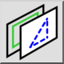
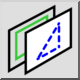

Toggle Lock Status
Pasek narzędziowy / ikona:


Menu: Warstwa > Toggle Lock Status
Skrót: Y, L
Polecenia: layertogglelock | yl
Jest to tłumaczenie automatyczne.
Pasek narzędziowy / ikona:


Menu: Warstwa > Toggle Lock Status
Skrót: Y, L
Polecenia: layertogglelock | yl
Opis:
Narzędzie to przełącza zablokowany status bieżącej warstwy. Możesz również przełączyć stan zablokowanych warstw, klikając ikonę kłódki obok nazwy warstwy na liście warstw.
Nie można zaznaczać, usuwać ani modyfikować elementów warstw zablokowanych.